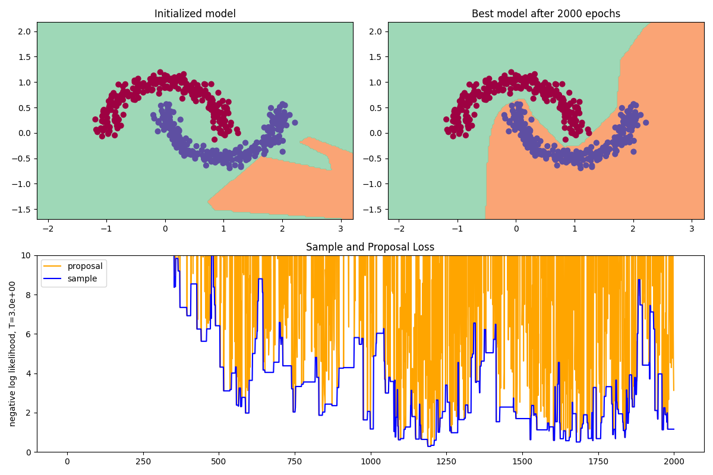

Inspired by the gradient descent deep dive in Andrej Karpathy's micrograd (and lectures), we're going to write a ``by-hands'' neural network optimizer based on the Metropolis-Hastings algorithm: micropolis.
Why? For a bit of fun; because gradient methods shouldn't be taken for granted; because I have no idea what Monte Carlo means
``Monte Carlo'' essentially means using random sampling to solve a problem, often something like optimization or sampling from a distribution, in a context that's too complicated to solve analytically. In our case this will be the optimization problem of minimizing the loss---or relatedly, the problem of sampling from the ``distribution'' of the loss function over the parameter space.
and that seems like a shame. But mostly for fun.
Metropolis-Hastings
The Metropolis-Hastings algorithm is a way of sampling from an arbitrary distribution.
It took me a while to conceptualize this problem, i.e. why it's important or even non-trivial. My usual way of sampling from a distribution was to write np.random.binomial(n, p) or whatever, without wondering what was going on inside. As soon as you start to wonder, though, it becomes clear---while it may not be so complicated to sample from a uniform distribution, sampling from an arbitrariliy complicated distribution can be arbitrarily complicated, and this is where Metropolis-Hastings comes to the rescue.
All we need is an (un-normalized)
This is a serious benefit, since computing the normalization constant can be about as hard as trying to find the analytic answer to your question in the first place---that is to say, impossible.
probability density function. Metropolis-Hastings uses a type of rejection sampling, where we sample from some simpler distribution (e.g. uniform or Gaussian) and then apply a test to accept or reject the sample---the samples that we accept will follow the desired distribution.
The precise setup is this. We start with an initial point $x=x_0$, and call our un-normalized probability density $f(x)$. Then we generate a proposal $x'$ for a new sample---we'll use the simplest approach, which draws our proposal from a Gaussian centered at our current sample $x$.
To test for acceptance we compare the density $f(x)$ and $f(x')$ at the two points, by computing the ratio $f(x')/f(x)$. Then draw a uniform random number $p\in[0,1]$; if $p\le f(x')/f(x)$ then we accept, and if $p > f(x')/f(x)$ then we reject. Basically, if the proposal is ``better'' in the sense of having a greater density then we always accept it, and if the proposal is ``worse'' in the sense of having a lower density then we accept or reject it with probability proportional to how much worse it is.
If the proposal is accepted, then it becomes our new sample $x_1=x'$; if rejected, we continue with the old sample $x_1=x_0$. Repeating this process, we produce a sequence of points $x_0, x_1, x_2, \ldots$ which follow the desired probability distribution.
What about neural nets?
In the context of optimizing a neural network, the ``distribution'' on the ``space'' that we want to sample from is the loss function on the space of model parameters. That is, each point $x_i$ is a set of parameters for the model, and the density $f(x)$ will be derived from our loss function. At each stage we propose new parameters by a Gaussian perturbation to the current parameters; if this decreases the loss, we accept the proposal, and if it increases the loss then we accept or reject depending on how much the loss increased. We also need to specify the standard distribution of the Gaussian proposal distribution---this is our learning rate hyperparameter, as it determines the size of jumps that our optimizer makes.
This will result in samples that follow the distribution of our loss function, which means that the samples will tend to accumulate in regions where the loss is lowest, thereby arriving at the optimal parameters.
Acceptance Test
The only missing piece is the probability density. The loss function itself isn't appropriate for this---at the most basic level, our algorithm tends to maximize the density function, but we want to minimize the loss. So how can we convert our loss function into a(n un-normalized) probability density?
A principled way to do this is to interpret the loss, in analogy with statistical mechanics, as measuring the ``energy'' of that state. To find the probability of this state, we plug the energy into the Boltzmann distribution
$$p(x)\propto e^{-f(x)/T}.$$
Here $T$ is the ``temperature'', a hyperparameter that essentially governs how generous or stingy we are with accepting bad proposals---high temperature will smooth out the distribution and make it more likely to accept bad proposals, low temperature the opposite.
This gives us a density function that we can use for Metropolis-Hastings.
Demo
This is all we need to get started, so let's whip up a proof of concept. We'll use sklearn.datasets.make_moons to make a non-linear classification problem with two features and two labels, and a tiny neural network
Writing a linear neural net from scratch is delightfully simple, especially if you aren't using gradients! Our linear layer is just a weight matrix and bias vector, with very little extra packaging needed.
class Linear(Module):
"""Linear layer"""
def __init__(self, in_dim, out_dim, bias=True):
self.weight = rng.normal(size=(in_dim, out_dim))
self.bias = rng.normal(size=(out_dim)) if bias else None
def __call__(self, x):
out = x @ self.weight
if self.bias is not None:
out += self.bias
return out
def parameters(self):
if self.bias is not None:
return [self.weight, self.bias]
else:
return [self.weight]
We'll use cross-entropy loss, which actually has a nice interaction with the Boltzmann distribution.
Inside cross-entropy we're taking negative log likelihoods, and the negative log will cancel out the negative exponential in the Boltzmann distribution. To be precise, if we have samples $x_1,\ldots,x_n$ and our model assigns probability $p_i$ to the correct label $y_i$ for sample $x_i$, then the cross-entropy loss is the average negative log likelihood
$$f(x)=-\frac{\ln(p_1)+\cdots+\ln(p_n)}{n}$$
and plugging into the Boltzmann distribution this becomes
$$
e^{-f(x)/T}
=e^{(\ln(p_1)+\cdots+\ln(p_n))/nT}
=e^{\ln((p_1\cdots p_n)^{1/nT})}
=(p_1\cdots p_n)^{1/nT},
$$
simply the total likelihood (the product of the probability for the correct label in each sample) to the power $1/nT$. This is a very satisfying result for the ``probability density'' analogue of our loss---in retrospect we can even dispense with cross-entropy and Boltzmann distributions, and go directly to likelihood.
The only think that sticks out is the exponent. Why not simply use the total likelihood? Indeed, in cross-entropy we could equally well take the sum of negative log likelihoods rather than the mean, and then the factor of $n$ would disappear from the exponent. However, the factor of $n$ has a balancing effect against sample size, and in any case the temperature parameter $T$ allows us to modulate the exponent independent of this. For now, since we're using the full dataset as a single batch, we'll drop the $n$ and just use $T$ to adjust the exponent.
Then implement our Metropolis-Hastings algorithm in an optimizer class,
class MH:
"""Metropolis-Hastings optimizer"""
def __init__(self, model, lr=1, T=1):
self.model = model
self.lr = lr
self.T = T
self.sample_nll = 1e5
self.rng = np.random.default_rng()
self.Stats = namedtuple('Stats', ['accept', 'proposal_nll', 'ratio', 'p'])
def step(self, X, y):
"""Step the optimizer: propose a sample, test, accept or reject"""
# propose new sample
proposal = self.model.copy()
for p in proposal.parameters():
p += self.lr * self.rng.normal(size=p.shape)
# compute loss
y_pred = proposal(X)
proposal_nll = F.negative_log_likelihood(y_pred, y, T=self.T)
# acceptance test
ratio = np.exp(self.sample_nll - proposal_nll)
p = self.rng.uniform(0,1)
accept = p < ratio
if accept:
self.model.set_parameters(proposal)
self.sample_nll = proposal_nll
return self.Stats(accept, proposal_nll, ratio, p)
and we're ready to train!
After some experimentation we set our learning rate to 1e-1 and our temperature to 3e0, and the results look something like this.

The top-left plot shows our classification dataset, with the decision boundary given by the initialized (untrained) model, which looks appropriately random. The top-right plot is the decision boundary of the best model over 2000 steps of Metropolis-Hastings, and we can see that it has successfully learned to distinguish the classes!